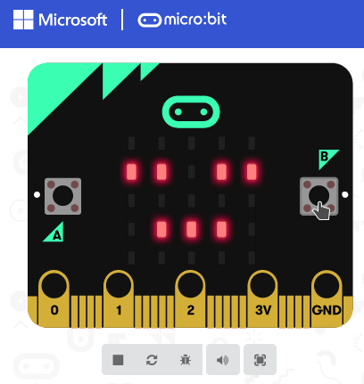

Tutorial
Contents
Tutorial#
Der Microbit ist ein vielseitig programmierbarer Einplatinencomputer.
Wichtige Links:
-
Let’s code für Links zu Editoren und dem Classroom
Hardware#
Bevor wir mit dem Programmieren loslegen, wollen wir uns die Hardware genauer anschauen und versuchen, den Microbit zu beschreiben.
Für die nun folgenden Übungen könnt ihr ein Poster gestalten, die Antworten auf einem Blatt Papier sammeln oder in einem Google Doc eintragen.
Exercise 1 (Microbit Kennzahlen)
Der Microbit ist ein Computer. Wir wissen also, dass es einen Prozessor und irgendeine Form von Speicher geben muss.
Recherchiere und versuche folgende Fragen zu beantworten:
Welche Rechenleistung hat der Prozessor?
Wie viel Arbeitsspeicher gibt es?
Wie groß ist die Speicherkapazität?
Wofür sind diese drei Größen wichtig?
Exercise 2 (Microbit Schnittstellen, Sensoren, …)
Der Microbit ist mit diversen Schnittstellen, Sensoren und weiteren Fähigkeiten ausgestattet.
Schaue dir das Gerät genau an und versuche es zu beschreiben.
Beantworte dabei auch die folgenden Fragen:
Welche Schnittstellen gibt es?
Was für Sensoren gibt es und was kann man mit ihnen messen?
Welche Möglichkeiten gibt es um mit dem Gerät zu interagieren?
Software#
Wenn der Microbit tun soll, was wir wollen, müssen wir ein Programm schreiben, das genaue Anweisungen gibt. Überblicksmäßig muss folgende passieren:
Programmieren: Wir erstellen ein Programm
Kompilieren: Das Programm wird in eine Form gebracht die der Prozessor versteht
Kopieren: Wir übertragen das kompilierte Programm auf den Microbit
Ausführen: Der Microbit führt das Programm aus
Erste kleine Programme 🐣#
Es gibt verschiedene Möglichkeiten Programme für den Microbit zu schreiben und wir werden diese auch noch kennen lernen.
Die ersten Schritte gehen wir alle gemeinsam (mit Hilfe des Microbit Classrooms). Danach kann jede für sich eigene Projekte mit Microsoft Make Code Microbit anlegen.
Exercise 3 (Flashing Heart 💗)
Wir wollen den Microbit so programmieren, dass die LED-Matrix ein blinkendes Herz anzeigt.

Exercise 4 (Name Tag (Namenskärtchen) 📛)
Wir wollen den Microbit so programmieren, dass er unseren Vornamen anzeigt.

Wir können das kompilierte Programm (HEX-Datei) händisch herunterladen und auf den Microbit kopieren. Das geht auch etwas einfacher.
Exercise 5 (Chrome & WebUSB Unterstützung)
Schritte:
Installiere Google Chrome als neuen Browser
Verwende Chrome um ein neues Programm via Make Code zu erstellen
Im Download-Menü (…) oder im Einstellungsdialog ⚙️ wähle „pair device“ und folge den Anweisungen
Überspiele das Programm direkt
Wenn du keinen neuen Browser installieren möchtest, kannst du zuerst auch einen Blick in hierher werfen und probieren, ob WebUSB mit einem anderen Browser klappt.
Etwas größere Aufgaben 🐤#
In den obigen Beispielen ergab sich das Programm sehr direkt. Wir haben den passenden Block gewählt und waren fast schon fertig. Wir werden uns nun ansehen, wie man etwas größere Programme aus kleinen Einzelteilen zusammen setzen kann.
Zahlen würfeln? 🎲#
Exercise 6 (Dice (Würfel))
Wir wollen den Microbit so programmieren, dass man ihn verwenden kann wie einen Würfel: Wenn man ihn schüttelt, soll er eine zufällige Zahl anzeigen.

Fragen:
Welche Blöcke brauchen wir?
Wie hängen sie zusammen?
Wir probieren jetzt eine Abwandlung des obigen Programms. An stelle von Zahlen, könnte man ja auch zufällige Emojis anzeigen, oder?
Emojis würfeln? 🲠+ 😃 = ❓#
Du weißt wie man einen Würfel baut und Symbole anzeigt. Kannst du das verbinden und an Stelle von Zahlen Emojis würfeln?
Exercise 7 (Emoji-Dice (Emoji-Würfel))
Wenn man den Microbit schüttelt, soll jedes Mal ein anderes Emoji angezeigt werden.
Fragen:
Was ist anders im Vergleich zum Würfel?
Welchen Teil vom Programm muss man deiner Meinung nach ändern?
Wie könntest du „zufälliges Emoji“ im Programm ausdrücken?
Wir haben soeben eine wichtigen Schritt getan: Wir haben aus den bestehenden Grundbausteinen etwas neues geschaffen!
Wir werden nun die Ideen und Konzepte der vorherigen Übungen weiter aufgreifen und noch die Möglichkeit von User Input durch Buttons berücksichtigen.
Retrospektive mit Emojis? 🤔#
Wir wollen ein Programm schreiben, über das wir anzeigen können, wie es uns geht oder wie uns der Tag gefallen hat. Wenn wir etwas gut finden, könnten wir einen 😃 anzeigen und wenn wir nicht so überzeugt sind bspw. einen 😠darstellen.
Exercise 8 (Emoji-Stimmung)
Die Stimmung soll man über die Buttons auswählen können.
Das gewünschte Verhalten siehst du hier:

Aufgaben und zu beantwortende Fragen:
Beschreibe das Verhalten in Worten
Gibt es eine vereinfachte Aufgabe, die leichter umzusetzen ist? Kann du zunächst mit dieser anfangen?
Welche Blöcke wirst du brauchen?
Wie hängen die Blöcke zusammen?
Skizziere das Programm auf Papier oder einem Whiteboard. Versuche dir zuerst Gedanken zu machen und die obigen Fragen zu beantworten und erst dann den Code zu erstellen.
Bei Fragen oder Unklarheiten einfach melden.
Mehr Sensoren 🤹#
Bis jetzt haben wir nur einen kleinen Ausschnitt der Funktionen des Microbits verwendet. Das wollen wir nun ändern.
Exercise 9 (Microbit Sensoren entdecken (60 Minuten))
Entscheide dich für einen der Sensoren, den wir noch nicht verwendet haben.
Fragen
Wofür könnte man diesen Sensor verwenden?
Wo kommen solche Sensoren zur Anwendung kommen und warum?
Wie verwendet man ihn beim Microbit?
Erstelle ein A4 Miniplakat zu diesem Sensor
Was macht der Sensor?
Wofür ist er gut?
Gib Anwendungsbeispiele
Programmiere den Microbit
Überlege dir eine kleines Programm, das den Sensor verwendet. Das Programm soll helfen, den anderen Teilnehmerinnen zu zeigen, wofür der Sensor gut ist und wie man ihn verwendet.
Programmiere den Microbit.
Präsentation
Präsentiere dein Miniplakat und zeige, was dein Microbit macht.
Beantworte Fragen der anderen Teilnehmerinnen
Microbits verbinden 📡🤝#
Wir können Microbits per Funk miteinander verbinden, so dass diese untereinander Informationen austauschen können.
Nachdem das ein wenig verwirrend sein kann, wollen wir uns das in Ruhe ansehen.
Exercise 10 (Radio)
Wir wollen zwei Microbits miteinander verbinden. Wenn man auf einem Microbit einen Button drückt, soll das auf dem anderen angezeigt werden.
Aufgaben und Fragen:
Welche Blöcke gibt es in der Rubrik „Radio“?
Welche Blöcke brauchen wir noch?
Hinweis:
Damit klar ist, welche Microbits miteinander kommunizieren (und welche nicht), wählt man eine Gruppe aus. Informationen werden dann innerhalb dieser Gruppe ausgetauscht.
Im Simulator gibt es zwei Microbits aber nur ein Programm. Versuche in der Ich-Perspektive zu bleiben.
Eine große Aufgabe 🧗#
Wir werden uns nun länger mit ein und derselben Aufgabe befassen. Konkret wollen wir das Spiel „Schere, Stein, Papier“ mit dem Microbit umsetzen. Das ist schon eine Herausforderung und wir werden uns daher folgende Fragen stellen:
Was kann ich tun, wenn ich nicht mehr weiter weiß?
Wie gehe ich damit um, wenn das Lösen einer Aufgabe länger dauert?
Welche Problemlösungsstrategien gibt es?
Schere, Stein, Papier ✂️ + 🪨 + 📑 = ❓#
Kennst du das Spiel Schere, Stein, Papier?
Es gibt einen Wikipedia-Artikel dazu:
Im Laufe der nächsten Kurstage wollen wir Schere-Stein-Papier mit dem Microbit umsetzen. Das heißt:
Wir verbinden zwei Microbits
Wir schütteln drei Mal
Jeder Microbit zeigt ein zufälliges Symbol an
Der eine gewinnt, der andere verliert
Wie können wir diese Aufgabe angehen?
Exercise 11 (Spiel kennen lernen)
Zu Beginn wollen wir noch gar kein Programm schreiben sondern uns mit dem Spiel selbst vertraut machen.
Falls du das Spiel nicht kennst, lies dir den Artikel auf Wikipedia durch.
Aufgaben:
Suche dir eine Partnerin.
Spielt das Spiel ein paar Mal.
Wisst ihr, wie man es spielt?
Gibt es eine Strategie, mit der man öfter gewinnen kann?
Versucht zu beschreiben was ihr tut, während ihr das Spiel spielt (auch wenn sich das komisch anfühlt).
Versucht eine Anleitung zu schreiben, wie man das Spiel spielt.
Vergleiche deine Anleitung mit der Beschreibung auf Wikipedia.
Fragen:
Wie ist es dir dabei gegangen eine Anleitung zu schreiben?
Hast du auch versucht Skizzen zu machen?
Exercise 12 (Aufgabe analysieren)
In aller Kürze könnte man das Spiel so beschreiben:
Wir verbinden zwei Microbits
Wir schütteln drei Mal
Jeder Microbit zeigt ein zufälliges Symbol an
Der eine gewinnt, der andere verliert
Das Programm, das wir später erstellen wollen, muss alle diese Dinge tun.
Wie können wir so ein Programm umsetzen?
Wir haben verschiedene Strategien besprochen um Probleme zu lösen:
Kannst du das Problem vereinfachen? Wie?
Kannst du das Problem in Teilprobleme zerlegen? Welche?
Kannst du den Ablauf beschreiben? Mit Worten oder Zeichnungen? Versuche es.
Kannst du jemandem die Aufgabe im Detail beschreiben? Suche dir eine Partnerin und probiere es.
Wenn du dir nicht sicher bist, Spiele das Spiel noch einmal mit jemandem und beschreibt gleichzeitig was ihr tut.
Exercise 13 (Aufgabe zeichnen)
Oft sagt ein Bild mehr als tausend Worte. Wir wollen daher noch einen Anlauf unternehmen und versuchen, das Spiel in ein Bild zu fassen. Unser Ziel ist dabei, den Spielablauf zu beschreiben und einzelne Teile der Aufgabe zu erkennen.
Erstelle eine Zeichnung aus der man ablesen kann:
Wann passiert etwas? Zeitlicher Ablauf.
Warum passiert etwas? Logischer Ablauf.
Gibt es wichtige Ereignisse, Schritte oder „Dinge“ die für den Ablauf wichtig sind (bspw. „schütteln“, „3 Mal“, …)?
Verwende gerne Farben, Pfeile, Nummerierungen, Sprechblasen, Symbole oder andere Hilfsmittel die es dir leichter machen, die Zusammenhänge zu beschreiben.
Wenn wir das Gefühl haben, die Aufgabe verstanden zu haben, können wir probieren sie Schritt für Schritt zu lösen. Oft merken wir dann, dass wir uns doch ein paar Details unklar sind. Das ist okay.
Exercise 14 (Teilaufgaben umsetzen)
Wir wollen versuchen Schere-Stein-Papier zu programmieren.
Wir halten uns weiterhin an unser Motto
Kleine Schritte, Stück für Stück
Versuche ganz bewusst zuerst einmal nur kleinere Teilaufgaben zu lösen. Wenn das klappt, füge sie zu einem Ganzen zusammen.
Aufgaben: Für jedes Teilproblem oder jede Vereinfachung:
Worin besteht die Aufgabe?
Welche Blöcke brauchst du?
Setze die Blöcke Schritt für Schritt zusammen und prüfe bei jeder Änderung, ob alles so funktioniert, wie du dir das vorstellst.
Exercise 15 (Regeln anwenden)
Wer gewinnt und wer verliert wird durch Regeln beschrieben.
Wenn wir diesen Teil des Programms umsetzen wollen, müssen wir uns für eine Sichtweise entscheiden.
Es macht Sinn, das Programm aus der Ich-Form zu schreiben.
Aufgaben und Fragen:
Wie lauten die Regeln?
Wie beschreibst du „das Ergebnis vom Schütteln“ für jede Spielerin?
Was soll passieren, wenn man gewonnen oder verloren hat?
Versuche ein Programm zu schreiben, das die Regeln anwendet.

Exercise 16 (Schere-Stein-Papier)
Wenn du alle Teilaufgaben gelöst hast, versuche die einzelnen Teile zu einem Ganzen zusammen zu fügen.
Wenn dir noch ein Teil fehlt, erstelle diesen zuerst separat.
Ihr könnte dazu gerne auch im Team arbeiten. Wenn ihr das tut, vergesst nicht:
Regelmäßig abwechseln und
aussprechen was ihr tun wollt! 😃